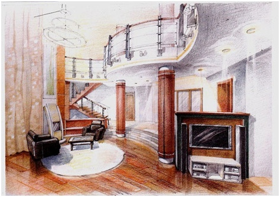
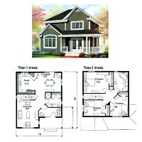
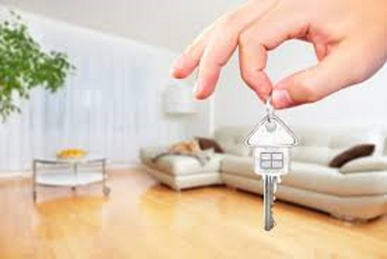

Наши услуги

Авторский надзор
 Идея авторского надзора строится на здравом смысле и гласит, что никто лучше автора идеи не может проследить за адекватностью ее воплощения. Авторский надзор — это комплекс мероприятий, осуществляемых для обеспечения соответствия технологических, архитектурно-стилистических, строительных и других технических решений и показателей вводимого в эксплуатацию объекта решениям и показателям, предусмотренным в утвержденной заказчиком проектной документации. Только автор концепции может предложить новые решения заказчику, не нарушив идею и сроки. Договор авторского надзора заключается с заказчиком после того, как завершено проектирование объекта, то есть к началу строительства. Заканчивается он в конце всех работ и может быть продлён на период ввода объекта в эксплуатацию. В зависимости от здравого подхода и оценки реальной необходимости в договоре указывается регулярность выезда архитектора на объект (в среднем один-два раза неделю).
Идея авторского надзора строится на здравом смысле и гласит, что никто лучше автора идеи не может проследить за адекватностью ее воплощения. Авторский надзор — это комплекс мероприятий, осуществляемых для обеспечения соответствия технологических, архитектурно-стилистических, строительных и других технических решений и показателей вводимого в эксплуатацию объекта решениям и показателям, предусмотренным в утвержденной заказчиком проектной документации. Только автор концепции может предложить новые решения заказчику, не нарушив идею и сроки. Договор авторского надзора заключается с заказчиком после того, как завершено проектирование объекта, то есть к началу строительства. Заканчивается он в конце всех работ и может быть продлён на период ввода объекта в эксплуатацию. В зависимости от здравого подхода и оценки реальной необходимости в договоре указывается регулярность выезда архитектора на объект (в среднем один-два раза неделю).
Дизайн проект интерьера
 . Выезд на объект
· Фотофиксация и замер объекта
· Пояснительная записка дизайн-проекта
· Обмерочный план
· План демонтажа перегородок, отверстий и проемов
· План перепланировки
· План расстановки мебели
· План теплых полов
· План напольных покрытий
· План потолков
· План электроустановки с привязкой розеток и выключателей
· 3d визуализации всех помещений
· Авторский надзор (выезд на объект)
· Подбор предметов интерьера (выезд с заказчиком)
Дизайн проект дома
 · Выезд на объект
· План экспликации
· Обмерный план
· План фасадов
· 3d визуализации дома
Ремонт квартир «ПОД КЛЮЧ»
ЧТО ВКЛЮЧАЕТ В СЕБЯ РЕМОНТ КВАРТИР «ПОД КЛЮЧ»?
-Демонтажные работы квартир
-Выравнивание стен под уровень
-Окраска или оклейка стен обоями
-Установка плинтуса
-Установка потолочного плинтуса
-Стяжка пола Настилка штучного паркета
-Замена радиаторов отопления и окраска труб
-Оштукатуривание и окраска откосов окон
-Оштукатуривание проемов
-Плитка в санузлах и на полу в кухне и коридоре
-Установка дверей
-Гидроизоляция и теплый пол в ванной комнате
-Скрытая разводка сантехнических труб
-Замена ванной или душевой кабины, унитаза, раковины в ванной и на кухне
-Перенос полотенцесушителя
-Установка фильтров воды, вынос строительного мусора.
По сути, ремонт «под ключ» предполагает практически полное отсутствие забот со стороны Заказчика. Для получения такой услуги нужно пройти три простых шага: - рассказать специалисту, какой вы хотите видеть вашу квартиру; - оплатить работу; - отпраздновать новоселье в полностью готовой к проживанию квартире.